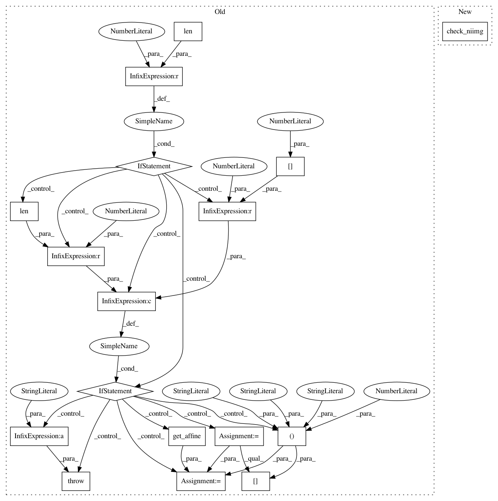

057ce85932ea16e86f85fba1e837fa7b50d43584,nilearn/_utils/niimg_conversions.py,,check_niimg_3d,#Any#,80
Before Change
niimg = load_niimg(niimg)
shape = niimg.shape
if len(shape) == 3:
pass
elif (len(shape) == 4 and shape[3] == 1):
// "squeeze" the image.
data = _safe_get_data(niimg)
affine = niimg.get_affine()
niimg = new_img_like(niimg, data[:, :, :, 0], affine)
else:
raise TypeError("A 3D image is expected, but an image "
"with a shape of %s was given." % (shape, ))
return niimg
def concat_niimgs(niimgs, dtype=np.float32, accept_4d=False,
After Change
Its application is idempotent.
return check_niimg(niimg, ndim=3)
def _niimg_iter():
pass
In pattern: SUPERPATTERN
Frequency: 3
Non-data size: 17
Instances
Project Name: nilearn/nilearn
Commit Name: 057ce85932ea16e86f85fba1e837fa7b50d43584
Time: 2015-04-20
Author: abraham.alexandre@gmail.com
File Name: nilearn/_utils/niimg_conversions.py
Class Name:
Method Name: check_niimg_3d
Project Name: nilearn/nilearn
Commit Name: b7d99dc4d489ff2ec135606cbfa46ce0288fed21
Time: 2014-07-02
Author: gael.varoquaux@normalesup.org
File Name: nilearn/plotting/slicers.py
Class Name: BaseSlicer
Method Name: init_with_figure
Project Name: nilearn/nilearn
Commit Name: b7d99dc4d489ff2ec135606cbfa46ce0288fed21
Time: 2014-07-02
Author: gael.varoquaux@normalesup.org
File Name: nilearn/plotting/slicers.py
Class Name: BaseSlicer
Method Name: add_overlay